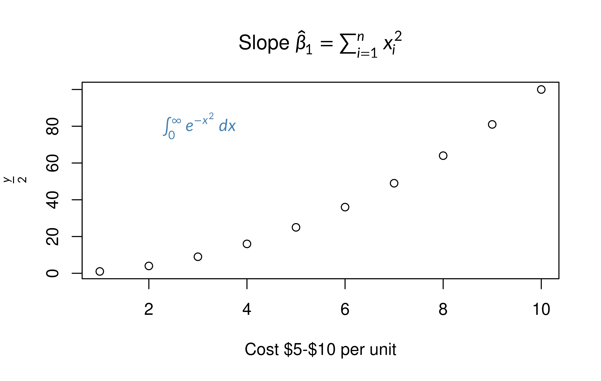
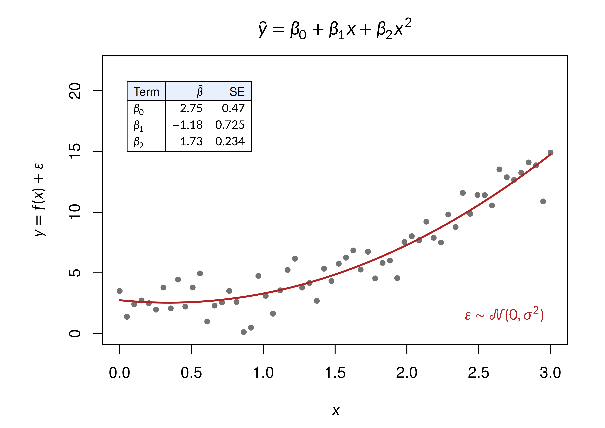

Base graphics is the plotting system R starts with, and its only
route to mathematical notation has been plotmath:
expression() labels with their own small syntax and no
tables, alignment or real LaTeX. gridmicrotex adds one switch that
changes this. Turn on latex_options(device_math = TRUE) and
any label written with $...$ is typeset by MicroTeX, the
same engine behind latex_grob(), with no other change to
your plotting code.
A first plot
library(gridmicrotex)
library(grid) # gpar() and unit conversion, used further down
latex_options(device_math = TRUE)
plot(1:10, (1:10)^2,
main = r"(Slope $\hat{\beta}_1 = \sum_{i=1}^{n} x_i^2$)",
xlab = "Cost $5-$10 per unit",
ylab = r"($\frac{y}{2}$)")
text(3, 80, r"($\int_0^\infty e^{-x^2}\,dx$)", col = "steelblue")
plot() and text() are the ordinary base
functions. The title, the y-axis title and the annotation are typeset,
while "Cost $5-$10 per unit" is drawn exactly as written,
because a label is only treated as math when it clearly contains some
(see When is a label treated
as math?). The labels are written as raw strings,
r"(...)", so their backslashes need no doubling.
The option stays on for the rest of this vignette and is switched off at the end.
In R Markdown
Set the option once, in your setup chunk. knitr captures a chunk’s
plots after its last line has run, so switching the option off
at the end of the chunk that draws leaves the figure unrendered, with
the labels coming out as literal $...$. If you need to turn
it off, do it in a later chunk.
Beyond plotmath
This is the whole LaTeX engine, not a translation layer, so a base
plot can carry things plotmath has no syntax for at all: a ruled table
with a coloured header row, display-style operators, calligraphic and
blackboard alphabets, automatic delimiter sizing. The coefficient table
below is a \begin{array} with \hline rules and
\rowcolor, drawn by an ordinary text()
call.
set.seed(42)
x <- seq(0, 3, length.out = 60)
y <- 2 + 1.4 * x^2 + rnorm(60, sd = 1.1)
fit <- lm(y ~ poly(x, 2, raw = TRUE))
cf <- signif(coef(summary(fit)), 3)
title_eq <- r"($$\hat{y} = \beta_0 + \beta_1 x + \beta_2 x^2$$)"
# A display-style title is taller than one text line, so take the top
# margin from the measured height instead of guessing at it.
h <- latex_dims(title_eq, gp = gpar(fontsize = par("ps")))$height
top <- ceiling(convertHeight(h, "bigpts", TRUE) /
(par("cin")[2] * 72 * par("mex"))) + 2
par(mar = c(4.5, 5.5, top, 2))
plot(x, y, pch = 19, col = "grey45", cex = 0.7, ylim = c(0, 22),
main = title_eq, xlab = r"($x$)",
ylab = r"($y = f(x) + \varepsilon$)")
lines(x, predict(fit), col = "#B22222", lwd = 2)
# Keep a formula on one physical line: R hands the device a multi-line
# label one line at a time, so a table split across source lines would
# never reach it whole.
tab <- sprintf(paste0(
r"(\begin{array}{|l|r|r|}\hline)",
r"(\rowcolor{#E8F0FE}\text{Term} & \hat{\beta} & \text{SE}\\\hline)",
r"(\beta_0 & %s & %s\\)",
r"(\beta_1 & %s & %s\\)",
r"(\beta_2 & %s & %s\\\hline\end{array})"),
cf[1, 1], cf[1, 2], cf[2, 1], cf[2, 2], cf[3, 1], cf[3, 2])
text(0.05, 18, tab, adj = c(0, 0.5), cex = 0.75)
text(2.95, 1.2, r"($\varepsilon \sim \mathcal{N}(0, \sigma^2)$)",
adj = c(1, 0), cex = 0.95, col = "#B22222")
Two placement notes, both consequences of text heights, which cannot
be corrected (see Reserving
room for a tall formula). The table is anchored with
adj = c(0, 0.5) and given headroom through
ylim, because R positions a top-anchored label using the
font ascent: a four-row table anchored at the very top of the
panel would have its header clipped away. And a formula written across
several source lines arrives at the device one line at a time and so is
never recognised, which is why tab is assembled with
paste0() into a single line.
How it works
latex_grob() asks MicroTeX to lay a formula out and
turns the result into grid grobs. device_math uses the same
layout but skips the grobs: gridmicrotex registers with R’s graphics
engine and, on every device it opens, takes over the two callbacks
through which all text is measured and drawn. A string with no
$, \(, \[ or \begin{
in it is handed straight back to the device. Anything else is checked
against the rule below and, if it is math, laid out by MicroTeX and
drawn with the device’s own line, polygon and text primitives.
Any plot drawn to an R device
Every R graphics system draws its text through those same callbacks,
so the switch reaches far beyond plot(). Checked so far:
base methods such as plot(lm), hist() and
legend(), and the plot methods of survival, igraph, plotrix
and gplots; lattice; grid; ggplot2, including figures assembled with
patchwork, gridExtra and cowplot. In ggplot2 that means axis titles,
geom_text() and geom_label() labels, facet
strips and legend keys all accept $...$ without a single
gridmicrotex function, as vignette("ggplot2-integration")
shows.
That lets you keep the code and packages you already use.
element_latex() and geom_latex() are still
worth reaching for in ggplot2 when a label is tall enough that ggplot2
has to reserve its real height, or when you want the rendering confined
to one layer or theme element rather than the whole session.
Output that is not drawn on an R device
plotly and rgl draw somewhere other than an R graphics device, so they were checked separately.
-
plotly renders in the browser.
ggplotly()measures the plot on an R device while converting it, but the labels it hands to plotly.js stay plain strings, and its output is identical withdevice_mathon or off. plotly has its own route to math instead:plotly::config()takes amathjaxargument for MathJax rendering in the browser. -
rgl draws with OpenGL, and ordinary
text3d()labels are drawn by rgl itself, so they stay literal. The exception isplotmath3d(), whichtext3d(..., usePlotmath = TRUE)also calls: it draws the label into an Rpng()device and shows that image in the scene, so a$...$label there does become real math. Being an image, it keeps the resolution it was drawn at rather than scaling like vector text.
When is a label treated as math?
A dollar sign is far too common in a real axis label to treat as a
delimiter on sight: "Cost $5-$10 per unit" has to survive
as plain text. So a label is intercepted only when
every delimiter in it is closed and
every $...$ pair wraps something that
actually looks like math (a command, a script, or a lone variable). The
delimiters are the ones latex_wrap() uses everywhere else:
$...$, $$...$$, \(...\) and
\[...\].
| Label | Rendered as | Why |
|---|---|---|
"Revenue ($)" |
text | one unclosed $
|
"Price is $5 today" |
text | one unclosed $
|
"Cost $5-$10" |
text | closed, but 5- is not math |
"Budget $1,000 to $5,000 with $x$ shown" |
text |
1,000 to is not math |
"$x$" |
math | a lone variable |
"$x^2$" |
math | a script |
"Slope $\\hat{\\beta}_1$" |
math | a command |
"\\(\\alpha\\)" |
math | explicit delimiters |
Every pair has to qualify, not merely one of them:
latex_wrap() cannot be told to treat one span as math and
leave another alone, so a single good $x$ would otherwise
drag the currency in with it.
Everything that fails the test is handed to the device untouched,
byte for byte. Turning the option on cannot change how an existing plot
looks unless a label really does contain math. Write \$ for
a literal dollar next to real math in the same label.
Reserving room for a tall formula
Widths are exact while the option is on: strwidth()
reports the formula’s real width, so labels centre correctly.
Heights are not, and cannot be. R works out text height
from the font and never from the string: strheight()
returns the same value for "abc" as for
$\sum_{i=1}^{n}\frac{x_i}{2}$. There is no callback a
device could use to answer “how tall is this string”, and the
per-character metric callback that does exist is handed one character
code at a time, never the string, so enlarging it would make
every line of text on the device taller. A tall formula can
therefore overflow a legend() box, the margin
par("mar") set aside for it, or a ggplot2 title or facet
strip.
Measure it with latex_dims() and reserve the room
yourself:
h <- latex_dims(r"($\frac{a}{b}$)", gp = gpar(fontsize = par("ps")))$height
bp <- convertHeight(h, "bigpts", TRUE)
# par(mar) counts lines of par("cin"), so convert in those units rather
# than grid's "lines": the two agree only while gpar$fontsize happens to
# equal par("ps").
bp / (par("cin")[2] * 72 * par("mex"))
#> [1] 1.041667Round that up and add it to the relevant side of
par(mar = ).
Side effects
device_math changes what the graphics device does for
the rest of the session, so it is worth knowing exactly what it
reaches.
- It is global. Every device opened while it is on is affected, including text drawn by packages you did not write. Labels without math are passed through byte for byte, so only labels that really contain math change.
-
Heights come from the font. Widths are exact, but
margins,
legend()boxes, ggplot2 titles and facet strips are all sized from the font, so a tall formula can overflow them. - A label split over lines is not recognised. R hands the device one line at a time, so a formula containing a newline never arrives whole.
-
Math is drawn as outlines, so it is not selectable
or searchable in a PDF or SVG, and files are larger than with
latex_grob(). -
Font face comes from the LaTeX. Prose in a bold
label is drawn plain unless it is wrapped in
\textbf{}. -
Some constructs are dropped.
\includegraphicsis left out and rounded box corners are drawn square. - Failures are quiet. A label that cannot be laid out is drawn as literal text, and warnings raised while laying it out are suppressed: there is no good moment to show them in the middle of drawing a plot.
-
showtext wins.
showtext::showtext_auto()replaces the same device callbacks when a plot starts, so with showtext on the labels come out as literal$...$. Use one or the other. -
A package that gives
$its own meaning acts first. corrplot, for instance, parses a label beginning with$as a plotmath expression and fails before the device sees it; begin the label with anything else. -
expression()labels are untouched, because R lays plotmath out inside the graphics engine, where a device never sees it. -
Only R graphics devices are reached. plotly and
other htmlwidgets are unaffected, and so are rgl’s own
text3d()labels. rgl’splotmath3d(), andtext3d(usePlotmath = TRUE)which calls it, draws through an R device and does pick it up.
?latex_options has the same list.